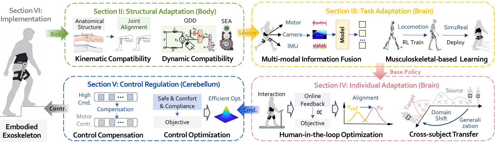
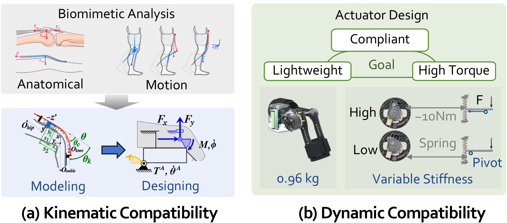
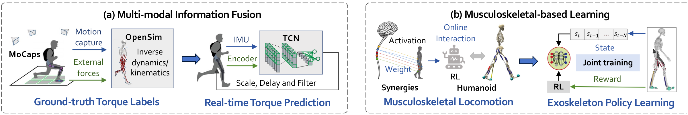
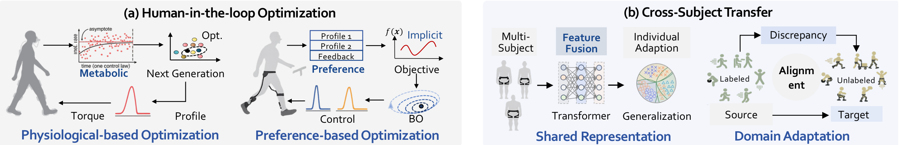
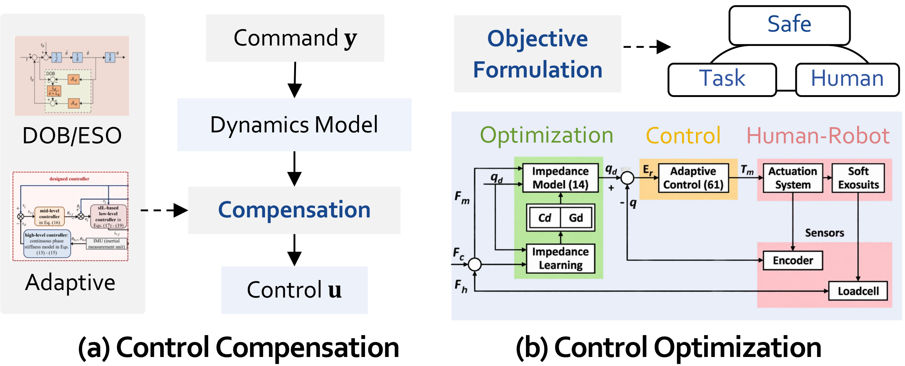

01
Body · Structure
Self-aligning joints follow anatomy, while lightweight, compliant drives deliver torque with little extra mass or impedance.
A system-level survey of how artificial intelligence enables personalized, comfortable assistance
through structural self-adaptation, task adaptation, user-specific adaptation, and control self-regulation.
Abstract
Over the past decade, artificial intelligence has been widely applied to lower-limb exoskeletons so they can adapt to complex tasks and assist diverse users. This survey defines embodied lower-limb exoskeleton assistance and reviews the field along four coupled dimensions: structural self-adaptation, task adaptation, user-specific adaptation, and control self-regulation. These dimensions form one closed loop—the body, the brain, and the cerebellum—for efficient, comfortable movement in dynamic environments.
Self-aligning joints follow anatomy, while lightweight, compliant drives deliver torque with little extra mass or impedance.
Task policies come from sensor fusion or musculoskeletal learning, and are then personalized through online and cross-subject transfer.
Compensation and optimization turn high-level commands into stable torque while preserving safety and voluntary motion.
Overview
Physical embodiment, high-level decision-making, and low-level control.
An embodied exoskeleton perceives the wearer, the device, and the environment, then optimizes an assistance torque profile for the task at hand. The physical structure is the body. Task and individual adaptation are the brain. Control self-regulation is the cerebellum. Together they support assistance when movement, need, and terrain all change.

Structural Self-adaptation

Self-aligning joints follow each wearer’s anatomy, matching assisted degrees of freedom and the moving knee center so assistance arrives as joint torque.
Proximal placement, series elasticity, and low-ratio drives keep continuous torque while cutting worn mass and interaction impedance.
Task Adaptation
A high-level map takes observations—IMU, camera, EMG, encoders—and returns joint torque, joint angle, or a trajectory. One line of work learns that map from multimodal datasets. The other trains assistance inside a musculoskeletal simulator, where human-like locomotion and exoskeleton torque are optimized together.

Inverse dynamics or EMG supplies torque labels. Temporal networks fuse wearable signals into an assistance command.
Rule-based primitives compress motion into a few parameters. End-to-end models, including flow matching, predict full trajectories outdoors.
Synergies and actor–critic learning make high-dimensional muscle control trainable in OpenSim, MuJoCo, and Hyfydy.
Joint or staged training balances tracking, lower human effort, and smoothness. Domain randomization narrows the sim-to-real gap.
User-specific Adaptation
Individual adaptation seeks user-specific parameters for the same observation-to-command map. Human-in-the-loop optimization tunes them from metabolic cost or preference feedback. Data-fusion methods align motion distributions across users, or learn shared representations, so the map generalizes to a new wearer.

Bayesian optimization and CMA-ES tune peak timing, magnitude, and impedance from only a few trials. Preference models, from classifiers to Gaussian processes, capture comfort that one physiological signal misses, while large network policies stay hard to optimize online.
Large multi-subject models, meta-learning, and continual adapters share temporal structure across people. Domain adaptation then aligns features with MMD, MDD, or covariance distance and reweights source subjects by similarity or reliability, so a new wearer needs little new data.
Control Self-regulation

Observers, adaptation, and iterative learning reject interaction torque, model error, and saturation while tracking trajectory or torque.
Impedance and constrained optimization cut effort, match interaction, and preserve voluntary motion within safety and actuator limits.
Resources
Two tables from the survey are summarized here: multimodal datasets used to learn task-adaptive maps, and hardware–control systems evaluated on walking and related activities.
| Related work | Motion capture | Sensors | Setting | Tasks and terrains | Link |
|---|---|---|---|---|---|
| Camargo et al. (2021) | Yes | IMU, sEMG, force plate | Indoor | Level ground, stairs, and ramps | Data |
| Molinaro et al. (2024) | Yes | IMU, force plate | Indoor | Level and ramp walking | Data |
| Molinaro et al. (2024) | Yes | IMU, force plate | Indoor | 28 tasks: walking, running, stairs, jumping, and squatting | Code |
| Li et al. (2026) | Yes | IMU, sEMG, force, ultrasound | Indoor | Level and ramp walking | Data |
| Luo et al. (2024) | No | IMU, encoder | Outdoor | Walking, running, and stairs | Code |
| Anonymous (2026) | No | IMU, encoder | Outdoor | Running, climbing, rough terrain, jumping, and squatting |
Motion-capture datasets estimate joint kinetics indoors. Outdoor sets record IMU and motor-side signals and shift more of the torque problem onto the controller.
| Related work | Joint | Mass (kg) | High-level controller | Low-level controller | Tasks / terrains | Reduction (%) |
|---|---|---|---|---|---|---|
| Kim (2019) | Hip | 5.0 | CoM rules → force | — | Level/slope walk, run | 9.3 (n=9) |
| Slade (2022) | Ankle | 2.7 | LR + CMA-ES → curve | FB + ILC · 200 Hz | Level/slope walk | 23.0 (n=10) |
| Luo (2024) | Hip | 3.2 | MLP (RL) → angle | PD + current · 100 Hz | Walking, running, and stairs | 24.3 (n=8) |
| Molinaro (2024b) | Hip–knee | 7.0 | TCN → torque | 55 Hz | Walk/run, lift, lunge | −8.0 (n=9) |
| Molinaro (2024a) | Hip | 4.8 | TCN → torque | Current FB · 200 Hz | Level, ramps, stairs | 5.4 (n=10) |
| Tricomi (2024) | Hip | 2.9 | Phase portrait → phase | Position PD · 100 Hz | Level, hills, steps | 10.5 (Off, n=10, old) |
| Tricomi (2025) | Hip | 2.7 | GM + AO → terrain/phase | Position PID · 100 Hz | Level, stairs | 13.4 (Off, n=6) |
| Durandau (2022) | Ankle | 20 | EMG–MSK → torque | PD + FF + DOB · 1000 Hz | Varied speed/grade | — |
| Chen (2024) | Knee | — | MLP/VAE + DMP → angle | DOB + VIC | Walk, stairs, squat | — |
| Medrano (2023) | Ankle | — | EKF → gait params | Current PID | Uneven/sloped walk | — |
| Lee (2024) | Knee | 4.4 | CNN → gait params | Pseudo-imp. · 100 Hz | Level, ramps, stairs | 6.2 (Off, n=10) |
| X. Zhang (2026) | Hip | 2.9 | RF + FSM → task/phase | P + LPF | Level, STS | 18.0 (n=7, old) |
| Y. Zhang (2026) | Hip | 4.0 | CNN + AO → mode/phase | 200 Hz | Level, uphill, stairs | 15.3 (n=5) |
Reduction is the level-walking net metabolic change versus walking without the exoskeleton. (Off) is versus assistance off. n is the number of participants. (old) marks older adults; other cohorts are young adults. Mass includes the battery and controller. A rate in the low-level column is the assistance-command update rate. Abbreviations: LR, logistic regression; ILC, iterative learning control; TCN, temporal convolutional network; GM, geometric model; AO, adaptive oscillator; MSK, musculoskeletal; DMP, dynamic movement primitive; EKF, extended Kalman filter; RF, random forest; FSM, finite-state machine; FB, feedback; FF, feedforward; DOB, disturbance observer; VIC, variable impedance control; LPF, low-pass filter; STS, sit-to-stand.
Open Challenges
Assistance for healthy adults aims to augment strength and reduce metabolic cost. Along each of the four dimensions, that progress still leaves a specific limit. The directions below address those limits, then the wearable deployment needed to realize them.
Multi-joint mechanisms improve compatibility, but the added mass fatigues the wearer. Future devices should be detachable, modular, and garment-like, with compliant interfaces that stay light. Further reduction depends on lighter motors, batteries, and circuits.
Motion capture is costly outdoors, and musculoskeletal models for that terrain are hard to train. Lightweight sensing should collect these data without lab equipment, and shared mappings should place heterogeneous recordings in one representation.
Personalization works for a few parameters, but high-dimensional and neural-network policies remain difficult. Preference-based optimization should use short, real-time feedback so collection stays brief and user fatigue stays low.
Tracking still depends on an accurate model, yet coupled human–exoskeleton dynamics are hard to write in closed form. Learned models should guide torque optimization and serve as simulators for training assistance policies.
These directions must stay comfortable and portable on a wearable device. Shared datasets, hardware, code, and mechanical designs support reproduction, and large multimodal models can carry the framework into wider human–robot interaction.
Citation
@article{anonymous2026embodiedexoskeleton,
title = {Embodied Lower-limb Exoskeleton Assistance: Survey, Challenges, and Perspectives},
author = {Anonymous},
year = {2026}
}